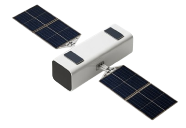
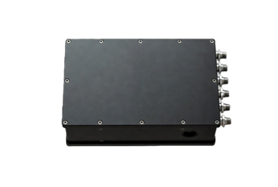
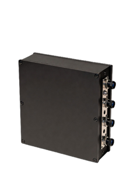
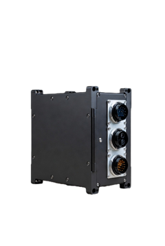
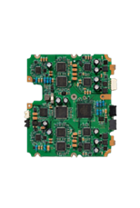
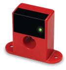
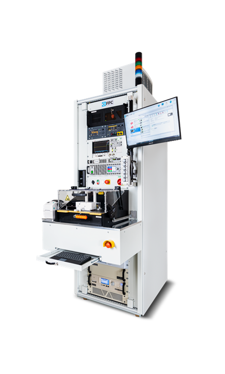
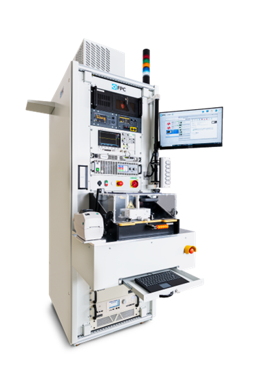
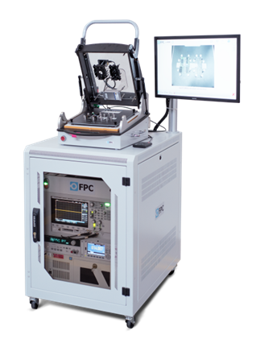

System testing
End-to-end platforms
Mission flows, integrated behavior, and traceability.

Subsystem testing
Modules & LRUs
Interfaces, timing, and fault behavior before integration.



Component testing
PCBAs, sensors, actuators
Repeatable checks before upstream integration.

PCBA
Actuators

Sensors
Test station
System station

Test rack
Subsystem rack

Test fixture
Component station
